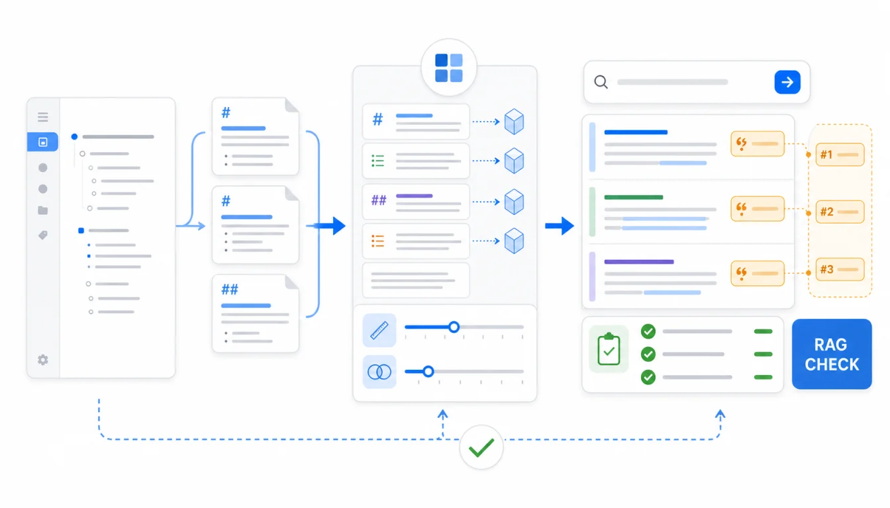

RAG 检索效果不好，先不要急着换模型。如果幕布导出的 Markdown 标题太泛、节点太碎、上下文断裂，知识库系统即使能上传成功，也很难召回正确片段，更难给出可追溯引用。
这篇专门讲“导入之后怎么验收”。它不重复介绍 Dify、Coze 或 NotebookLM 的上传入口，而是给你一套通用检查法：看标题、看分段、看召回、看引用、看无法回答时的边界。
快速答案：先用 Mubu Exporter 导出 Markdown；上传 5 到 10 篇代表性文档看分段预览；如果片段太碎，补标题和上下文；如果片段太长，拆小节；准备一套真实问题集检查召回和引用；只有样本通过后，再导入全量资料。

先分清：生成差，还是检索差？
很多人说“AI 回答不好”，其实有两种情况：
| 问题类型 | 表现 | 优先排查 |
|---|---|---|
| 检索差 | 引用来源不相关，或找不到明明存在的资料 | 文件名、标题、分段、关键词 |
| 生成差 | 来源对了，但总结顺序混乱或表达不稳 | 提示词、回答格式、模型配置 |
| 资料差 | 来源本身过期、重复、没有明确结论 | 资料清洗、版本管理、人工验收 |
如果引用来源都不对，改提示词通常收益有限。先把 Markdown 资料源整理到能被正确检索。
幕布 Markdown 最常见的 5 个 RAG 问题
1. 标题太泛
会议纪要、产品方案、复盘这类标题对人可能够用，对检索不够。建议标题包含主题、场景、时间和状态。
不推荐：
# 会议纪要
推荐：
# 2026-07 客服退款流程复盘：异常订单处理与责任分工
2. 节点太碎
幕布大纲常常是一行一个观点。导出成 Markdown 后，如果每个短节点都被切成独立片段，检索命中时会缺上下文。处理方式是给短列表补一个明确小节标题，或者把同一主题的短节点合并为段落。
3. 深层列表失去语义
深层列表如果没有上层标题，单独被召回时会像一串孤立步骤。关键 SOP 建议把每个主要阶段改成二级标题，再把步骤放到下面。
4. 图片和表格没有文字说明
如果答案依赖流程图、截图或表格，Markdown 里只有一个图片链接是不够的。补一句“这张图说明什么”，往往比调参数更有效。
5. 旧版和新版同时存在
RAG 不会天然知道哪个文件是准的。旧版资料要移入 archive，或在标题里标清“已废弃”。如果不能删除，就不要让它进入默认知识库。
分段预览时看什么？
多数 AI 知识库都会在导入时做分段或索引。你不需要追求某个固定数值，而要看片段是否“能独立回答一个小问题”。
| 分段状态 | 现象 | 处理建议 |
|---|---|---|
| 太碎 | 一个片段只有一句话或几个列表项 | 补标题、合并短节点、增加上下文说明 |
| 太长 | 一个片段跨多个主题 | 拆小节、加二级标题、分成多个文件 |
| 上下文断裂 | 片段里只有“优点/缺点/注意”但不知道对象 | 把对象写进标题或段首 |
| 引用混乱 | 回答引用了相邻但不相关片段 | 拆开主题，避免一个文件混太多问题 |
问题集怎么设计？
不要只问你期待 AI 回答的问题，也要问它“不应该回答”的问题。一个完整验收集至少包含这些类型：
| 类型 | 示例问题 | 检查点 |
|---|---|---|
| 精确事实 | 退款申请需要满足哪些条件？ | 是否命中正式规则 |
| 流程步骤 | 发布前检查清单的顺序是什么？ | 是否漏步骤或乱顺序 |
| 跨文档对比 | Q2 和 Q3 用户反馈有什么变化？ | 是否引用两个时期的资料 |
| 边界问题 | 内部报价能否直接告诉客户？ | 是否拒答或提示人工确认 |
| 无资料问题 | 资料库里不存在的新政策是什么？ | 是否承认缺少依据 |
每个问题都要记录“应该引用哪篇文档”。否则你很难判断回答是检索正确，还是碰巧说得像。
引用验收：不只看有没有来源
有引用不等于可信。至少检查四件事：
- 引用是不是来自正确主题的文档。
- 引用是不是最新版本，而不是 archive。
- 引用片段是否覆盖答案中的关键结论。
- 答案有没有把多个来源拼成原文没有的结论。
如果答案结论比引用来源更强，就要把提示词改成“只根据来源回答”，同时回到资料源补充明确结论。
一个实用的验收记录表
| 问题 | 期望来源 | 实际来源 | 结论 | 处理 |
| --- | --- | --- | --- | --- |
| 退款条件有哪些 | 2026-退款规则FAQ.md | 命中正确 | 通过 | 无 |
| 发布前谁负责回归 | 发布检查清单.md | 命中旧版 | 未通过 | archive 旧文档 |
| 新功能价格是多少 | 无 | 无引用但编了价格 | 未通过 | 增加拒答提示 |
这张表比“感觉好像能用”可靠得多。每次更新知识库后，都可以重复跑核心问题集。
什么时候要回到幕布重新整理？
如果只是少量标题不清，可以直接改导出的 Markdown。如果发现幕布原始大纲本身就混乱，建议回到幕布里整理源头，再重新导出。尤其是团队 SOP、产品规则、客服 FAQ 这类长期维护资料，源头干净会减少后续维护成本。
常见问题
分段大小有没有标准答案？
没有通用标准。不同平台、模型和资料类型会有差异。更实际的判断方式是：一个片段能否独立回答一个明确问题，同时不跨太多无关主题。
Markdown 比 PDF 更适合 RAG 吗？
对幕布大纲笔记来说，Markdown 通常更适合持续维护和检查分段。PDF 适合定稿材料，但排版复杂时更需要抽查解析结果。
要不要把关键词手动加进文档？
可以，但不要堆砌。更好的方式是在标题、段首和文件名里自然使用业务常用词。例如“退款”“售后”“异常订单”比“流程一”更容易被检索。
总结：RAG 验收要从来源开始
AI 知识库不是上传完就能信。幕布导出的 Markdown 给了你一个可编辑、可检查、可版本管理的资料源。真正上线前，需要看分段是否合理、问题是否能召回正确来源、引用是否支撑答案。
如果你已经完成资料清洗，下一步就是建立这套 RAG 验收表；如果你还没有清洗，先看AI 知识库资料清洗指南。
相关链接：